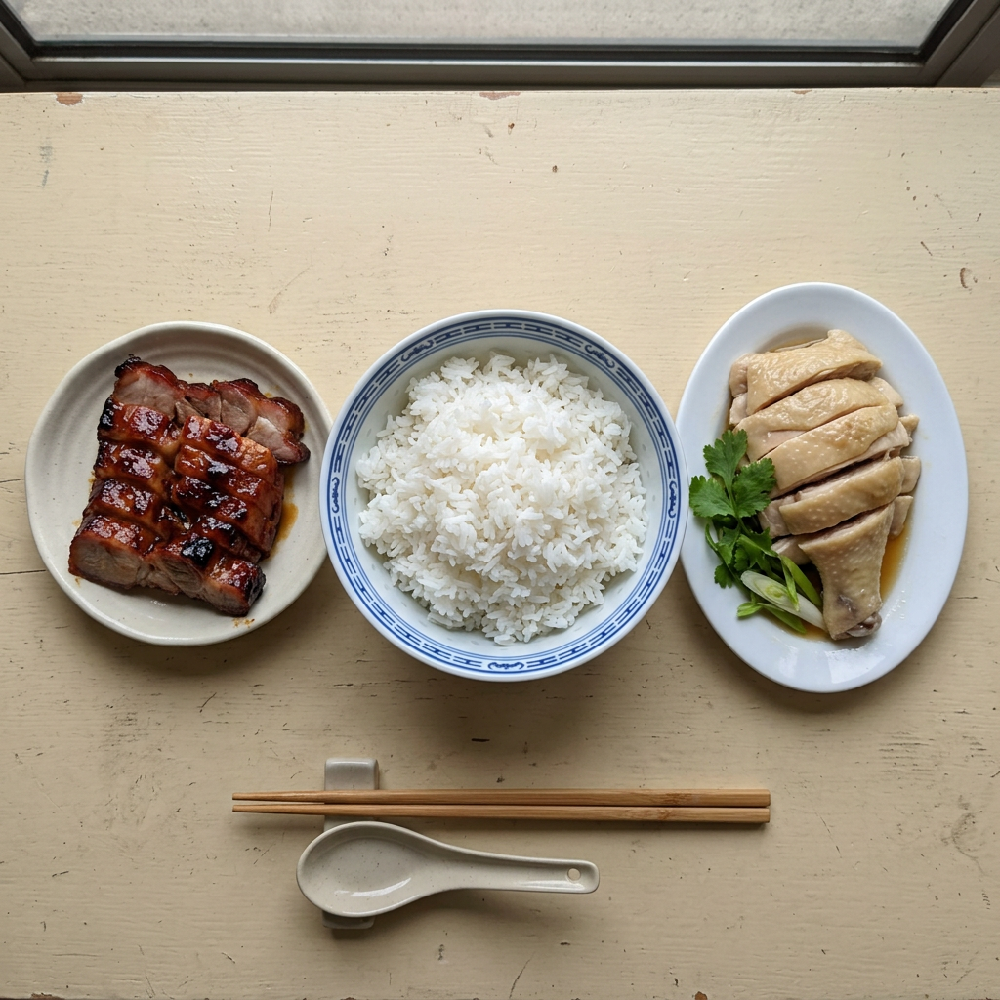

白飯
較高影響
實測餐後血糖規律
這款食物的餐後血糖與平常比較高
25 餐中有 19 次偏高
食物配搭規律
吃 白飯 時，配 燒肉 的平均餐後血糖讀數較高；配 雞肉 的較低。
這只是你記錄中的模式，不能證明是其中一種食物造成差異。份量、其他食物、活動和測量時間也會影響讀數。
拍下你的餐點，獲得個人化飲食建議！

現在是 07:42
這是哪一餐？
查看你已記錄的餐後血糖結果。
這款食物的餐後血糖與平常比較高
25 餐中有 19 次偏高
食物配搭規律
吃 白飯 時，配 燒肉 的平均餐後血糖讀數較高；配 雞肉 的較低。
這只是你記錄中的模式，不能證明是其中一種食物造成差異。份量、其他食物、活動和測量時間也會影響讀數。